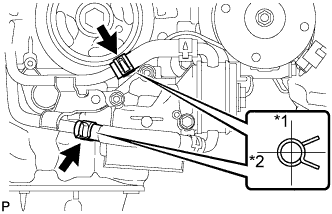

МАСЛЯНЫЙ РАДИАТОР ДВИГАТЕЛЯ > УСТАНОВКА |
| 1. УСТАНОВИТЕ МАСЛЯНЫЙ РАДИАТОР В СБОРЕ |
Установите новую уплотнительную шайбу на болт.
Установите масляный радиатор и закрепите его болтом и гайкой.
Установите 2 шланга.
| *1 | Вверх |
| *2 | Назад |
| 2. УСТАНОВИТЕ КРОНШТЕЙН МАСЛЯНОГО ФИЛЬТРА |
Установите кронштейн масляного фильтра с новой прокладкой и закрепите его 2 гайками и болтом.
| 3. ПОДСОЕДИНИТЕ ПЕРЕПУСКНУЮ ТРУБКУ ОХЛАЖДАЮЩЕЙ ЖИДКОСТИ |
|  |
Подсоедините 2 шланга и перепускную трубку охлаждающей жидкости.
| *1 | Вверх |
| *2 | Назад |
Заверните 3 болта.
| 4. УСТАНОВИТЕ ФИЛЬТРУЮЩИЙ ЭЛЕМЕНТ МАСЛЯНОГО ФИЛЬТРА |
Очистите внутреннюю поверхность крышки масляного фильтра, резьбы и канавку для кольцевого уплотнения.
Нанесите небольшое количество моторного масла на новое уплотнительное кольцо и установите его на крышку масляного фильтра.
Установите новый фильтрующий элемент на крышку масляного фильтра.
Удалите грязь и посторонние материалы с установочной поверхности на двигателе.
Снова нанесите небольшое количество моторного масла на уплотнительное кольцо и временно установите крышку масляного фильтра.
 |
Затяните крышку масляного фильтра с помощью SST.
| *1 | Фиксатор кронштейна масляного фильтра |
| *a | Отсутствие зазора |
 |
Нанесите небольшое количество моторного масла на новое кольцевое уплотнение пробки сливного отверстия и установите его на крышку масляного фильтра.
| *1 | Кольцевое уплотнение |
Установите пробку сливного отверстия масляного фильтра.
| 5. ЗАЛЕЙТЕ МОТОРНОЕ МАСЛО |
Добавьте свежее масло.
| Класс масла по степени вязкости | Вязкость масла (SAE) |
| Универсальное моторное масло API сорт SL "Energy-Conserving", SM "Energy-Conserving" или ILSAC | 0W-20 5W-20 5W-30 10W-30 |
| Универсальное моторное масло API сорт SL или SM | 15W-40 20W-50 |
| Параметр / Устройство | Заданные условия |
| Слив и заполнение без замены масляного фильтра | 5,7 литра (6,0 кварты США, 5,0 английской кварты) |
| Слив и заполнение с заменой масляного фильтра | 6,1 л (6,4 кварты США, 5,4 английской кварты) |
| Заполнение сухой системы | 6,9 литра (7,3 кварты США, 6,1 английской кварты) |
| Параметр / Устройство | Заданные условия |
| Слив и заполнение без замены масляного фильтра | 5,7 литра (6,0 кварты США, 5,0 английской кварты) |
| Слив и заполнение с заменой масляного фильтра | 6,2 литра (6,6 кварты США, 5,5 английской кварты) |
| Заполнение сухой системы | 7,1 литра (7,5 кварты США, 6,2 английской кварты) |
| 6. ПРОВЕРЬТЕ УРОВЕНЬ МОТОРНОГО МАСЛА |
Прогрейте двигатель, а затем остановите его и подождите 5 мин.
Убедитесь, что уровень моторного масла находится между отметкой низкого и максимального уровней щупа проверки уровня масла.
Если уровень низкий, проверьте, нет ли утечек, и долейте масло до максимальной отметки.
| 7. ДОБАВЬТЕ ОХЛАЖДАЮЩУЮ ЖИДКОСТЬ ДВИГАТЕЛЯ |
Затяните 2 пробки сливных кранов блока цилиндров.
Затяните пробку сливного крана радиатора вручную.
Долейте охлаждающую жидкость.
| Параметр / Устройство | Заданные условия | |
| Для моделей с автоматической трансмиссией | Для моделей без заднего подогревателя | 10,5 литра (11,1 кварты США, 9,2 английской кварты) |
| Для моделей с задним подогревателем | 12,3 литра (13,0 кварты США, 10,8 английской кварты) | |
| Для моделей с подогревателем | 12,8 литра (13,5 кварты США, 11,2 английской кварты) | |
| для моделей с механической трансмиссией | Для моделей без заднего подогревателя | 10,7 литра (11,3 кварты США, 9,4 английской кварты) |
| Для моделей с задним подогревателем | 12,5 литра (13,2 кварты США, 11,0 английской кварты) | |
Медленно налейте охлаждающую жидкость в расширительный бачок радиатора до отметки "F".
Установите пробку расширительного бачка.
Установите на место пробку радиатора.*1
Запустите двигатель и сразу же остановите его.*2
Подождите примерно 10 с. Затем снимите пробку радиатора и проверьте уровень охлаждающей жидкости. Если уровень охлаждающей жидкости снизился, добавьте охлаждающую жидкость.*3
Повторяйте шаги *1, *2 и *3 до тех пор, пока уровень охлаждающей жидкости не снизится.
Установите на место пробку радиатора.*4
Настройте систему кондиционирования, как описано ниже.*5
| Параметр / Устройство | Условие |
| Скорость вентилятора | Любая настройка, кроме OFF (ВЫКЛ) |
| Температура | В сторону "WARM" |
| Переключатель системы кондиционирования | Выкл |
Запустите двигатель, прогрейте его настолько, чтобы открылся термостат, а затем дайте поработать в таком состоянии несколько минут, чтобы прокачать охлаждающую жидкость.*6
Остановите двигатель и подождите, пока охлаждающая жидкость не охладиться до температуры окружающего воздуха. Затем снимите пробку радиатора и проверьте уровень охлаждающей жидкости.*7
Если уровень охлаждающей жидкости снизился, добавьте охлаждающую жидкость и прогрейте двигатель до открывания термостата.*8
Если уровень охлаждающей жидкости не снизился, убедитесь, что уровень жидкости в расширительном бачке радиаторе находится на линии F.
Если уровень охлаждающей жидкости ниже линии F, повторите шаги с *4 по *8.
Если уровень охлаждающей жидкости выше линии F, слейте охлаждающую жидкость до линии F.
| 8. ПРОВЕРЬТЕ, НЕТ ЛИ УТЕЧЕК МОТОРНОГО МАСЛА |
Запустите двигатель. Убедитесь, что утечки масла отсутствуют в узлах, на которых выполнялись работы.
| 9. ПРОВЕРЬТЕ, НЕТ ЛИ УТЕЧЕК ОХЛАЖДАЮЩЕЙ ЖИДКОСТИ |
Заполните радиатор охлаждающей жидкостью, а затем подсоедините приспособление для опрессовки системы охлаждения и проверки пробки радиатора.
Прогрейте двигатель.
С помощью приспособления для опрессовки системы охлаждения и проверки пробки радиатора увеличьте давление в радиаторе до 123 кПа (1,3 кгс/см2, 18 фунтов на кв. дюйм) и убедитесь, что давление не падает.
Если давление снижается, проверьте на наличие утечек шланги, радиатор и насос системы охлаждения. Если нет следов или признаков утечки внешней охлаждающей жидкости, проверьте сердцевину отопителя, блок цилиндров и головку блока цилиндров.
| 10. УСТАНОВИТЕ ВЕРХНЕЕ УПЛОТНЕНИЕ КРОНШТЕЙНА РАДИАТОРА |
Установите верхнее уплотнение кронштейна радиатора и закрепите его 13 фиксаторами.
| 11. УСТАНОВИТЕ ЗАЩИТУ КАРТЕРА ДВИГАТЕЛЯ № 1 В СБОРЕ |
 |
Присоедините защиту картера двигателя к кузову автомобиля, как показано на рисунке.
Вверните 4 болта.
| 12. УСТАНОВИТЕ НИЖНЮЮ НАКЛАДКУ ПЕРЕДНЕГО БАМПЕРА |
Установите нижнюю облицовку переднего бампера и закрепите ее 5 болтами и фиксатором.